번갈아 턴과 속도 순서: 속도가 횟수를 못 바꿔요
턴제 전투가 단조롭게 느껴지는 건 대개 차례를 정하는 규칙이 너무 단순해서예요. 영상은 같은 전투 하나를 놓고 차례 규칙만 세 가지로 바꿔 가며 비교해요. 첫 화면의 카드 세 장이 오늘 비교할 규칙이에요.
번갈아 턴: 속도가 아무 쓸모가 없어요
무대는 픽셀 아트 전장이에요. 왼쪽 우리 편은 마법사(속도 6), 팔라딘(속도 4), 엘프 궁수(속도 9)이고, 오른쪽 적은 스켈레톤(속도 11), 리자드(속도 6), 골렘이에요. 맨 위 막대가 앞으로 움직일 순서를 보여 주는 차례표예요.
가장 쉬운 규칙은 우리 편이 모두 움직이고, 그다음 적이 모두 움직이는 거예요. 만들기는 쉽지만 속도가 아무 의미가 없어요. 화면 아래 '속도 9 · 속도 4 — 둘 다 한 판에 한 번'이라는 표시처럼, 엘프 궁수가 팔라딘보다 두 배 넘게 빨라도 움직이는 횟수는 똑같아요.
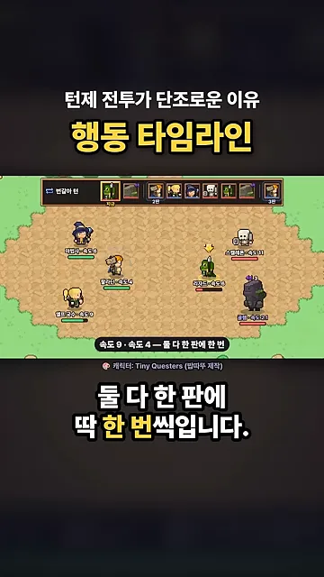
문제가 하나 더 있어요. 적 차례가 오면 세 마리가 한꺼번에 몰아쳐요. 그동안 우리 편은 아무것도 못 하고 맞고만 있어야 해요.
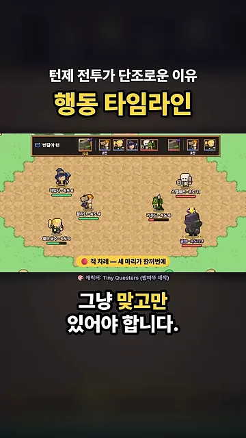
속도 순서: 먼저 움직일 뿐, 횟수는 그대로예요
그래서 많이 쓰는 방법이 속도 순서예요. 한 판이 시작될 때 모두를 속도대로 줄 세우고, 빠른 순서로 한 번씩 움직여요. 차례표 맨 앞에 가장 빠른 스켈레톤과 궁수가 오고, 느린 골렘은 맨 끝으로 밀려요.
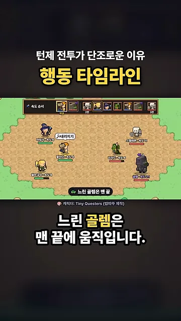
하지만 빠르면 먼저 할 뿐, 횟수는 여전히 한 판에 한 번이에요. 마법사가 빠르게 해 주는 마법을 걸어도 다음 판 순서가 조금 앞당겨질 뿐, 한 번 더 움직이지는 못해요. 화면 아래 '다음 판 순서만 앞으로'가 바로 그 한계를 말해요.
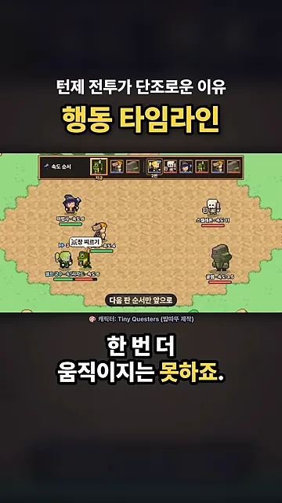
행동 타임라인: 차례를 시간으로 바꾸기
행동 타임라인은 '차례'를 '시간'으로 바꾼 규칙이에요. 한 번 움직이고 나면 다음 차례까지 기다리는 시간이 정해지고, 빠를수록 짧게 기다려요. 화면 아래에 그 식이 그대로 나와요.
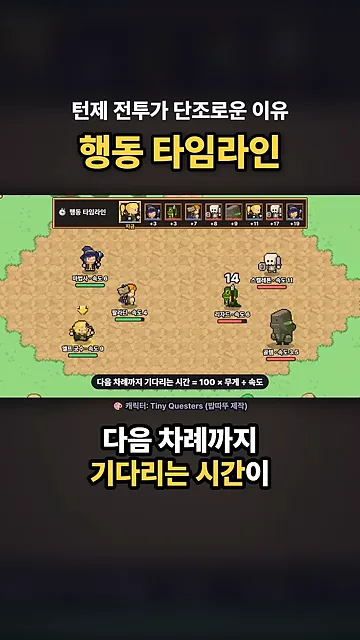
식에 엘프 궁수와 팔라딘을 넣어 보면 차이가 바로 보여요. 무게 1짜리 행동이라면 궁수(속도 9)는 약 11, 팔라딘(속도 4)은 25를 기다려요. 그래서 궁수가 두 번 쏘는 동안 팔라딘은 한 번 휘둘러요. 아래 차례표에서도 궁수 얼굴(노란 테두리)이 두 번 들어가 있어요.
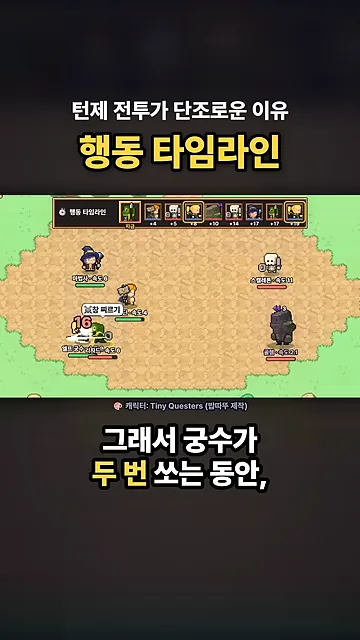
무거운 기술은 강한 대신 늦게 돌아와요
행동마다 기다리는 시간을 다르게 줄 수도 있어요. 팔라딘 차례에 뜨는 기술 목록을 보면 세 가지가 있어요.
| 기술 | 피해 | 무게 | 팔라딘(속도 4)이 기다리는 시간 |
|---|---|---|---|
| 내려치기 | ×1 | 1 | 25 |
| 무거운 일격 | ×2.1 | 1.7 | 42.5 |
| 방패 들기 | 받는 피해를 줄여요 | 0.7 | 17.5 |
기다리는 시간 칸은 화면의 식으로 계산한 값이에요. 무거운 일격은 피해가 두 배 넘게 세지만, 다음 차례가 그만큼 늦게 와요. 방패 들기는 가벼워서 금방 다시 차례가 돌아와요.
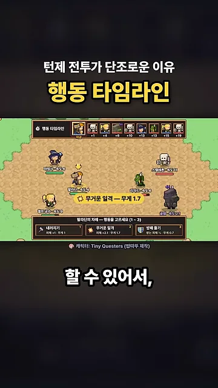
다가올 차례를 보여 주면 수싸움이 생겨요
다가올 차례를 화면 위에 보여 주면 플레이어가 미리 대응할 수 있어요. 아래 장면에서 차례표 두 번째 칸, 빨간 테두리의 골렘이 곧 내려찍기를 하려는 참이에요. 이때 마법사가 '느리게' 마법을 걸어요.
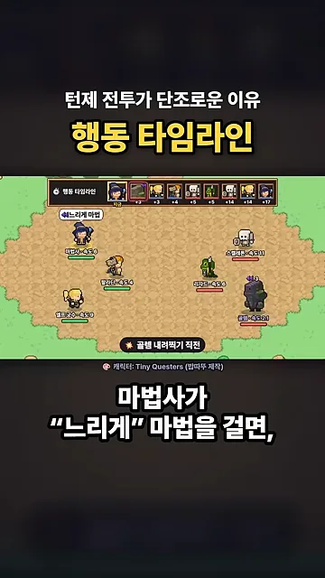
마법이 걸리자 골렘 칸이 차례표 뒤쪽으로 밀려나요. 그 틈에 우리 편이 한 번씩 더 움직일 수 있어요. 디버프 하나가 상대의 공격을 미루는 수가 되는 거예요.
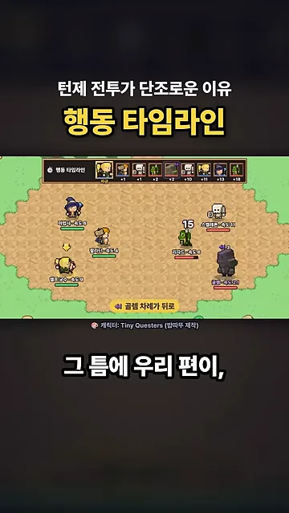
영상의 여섯 캐릭터와 속도로 차례표 앞쪽 18칸을 만들어 봐요. 규칙을 바꾸고, 엘프 궁수의 속도와 팔라딘의 기술을 바꿔 보세요.
- 번갈아 턴과 속도 순서에서 궁수 속도를 4에서 14로 올려 보세요. 18칸 안에서 궁수가 움직이는 횟수는 그대로예요. 속도가 순서만 바꾼다는 영상의 말 그대로예요.
- 행동 타임라인에서 같은 실험을 해 보세요. 궁수 칸이 눈에 띄게 늘어나요. 영상이 '속도가 두 배면 행동도 두 배'라고 경고한 부분이에요.
- 팔라딘 기술을 무거운 일격으로 바꿔 보세요. 팔라딘 칸이 줄고 다른 캐릭터가 그 자리를 채워요.
가정: 골렘 속도는 화면에 보인 2.1로, 팔라딘 외 캐릭터의 행동 무게는 모두 1로 두었어요. 번갈아 턴에서 같은 편 안의 순서는 속도가 빠른 순으로 두었어요.
결과 비교와 규칙 고르기
세 규칙이 정말 다른 게임을 만드는지 영상은 숫자로 보여 줘요. 같은 유닛, 같은 수치, 같은 기술로 자동 전투를 300판씩 돌려 우리 편이 이긴 비율을 쟀어요. 막대를 보면 번갈아 턴 50%, 속도 순서 30%, 행동 타임라인 67%예요.
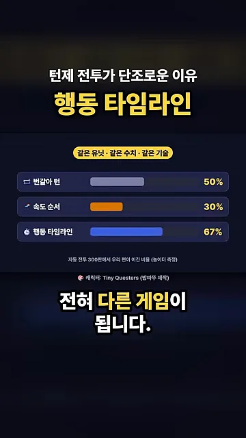
속도 하나가 다른 능력치를 삼켜요
행동 타임라인에는 대가가 있어요. 속도가 두 배면 행동도 두 배라서 속도만 올려도 다른 능력치가 의미 없어지기도 해요. 영상은 엘프 궁수 속도를 4에서 14로 올렸을 때 승률이 어떻게 바뀌는지 보여 줘요. 이 화면의 출발점은 궁수 속도 4라서 위 막대 화면과 숫자가 달라요.
| 규칙 | 궁수 속도 4 | 궁수 속도 14 |
|---|---|---|
| 번갈아 턴 | 50% | 50% |
| 속도 순서 | 36% | 33% |
| 행동 타임라인 | 21% | 95% |
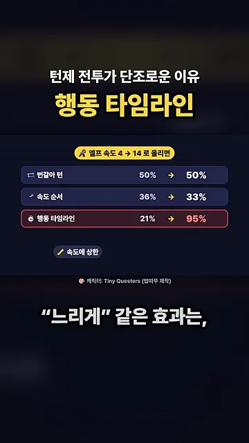
그래서 실제 게임은 두 가지로 속도를 묶어 둬요. 하나는 속도에 상한을 두는 거예요. 다른 하나는 느리게·빠르게 같은 효과를 몇 번만 통하게 하는 거예요. 화면 오른쪽 아래 '3 → 2 → 1 몇 번만' 표시가 그 두 번째 방법이에요.
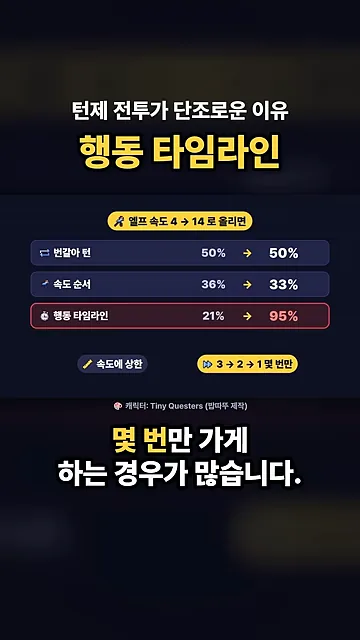
어떤 규칙을 고를까요
영상의 결론은 '타임라인이 무조건 낫다'가 아니에요. 만들려는 전투에 맞춰 고르면 돼요. 마지막 화면이 규칙마다 어울리는 게임을 한 줄씩 짝지어 줘요.
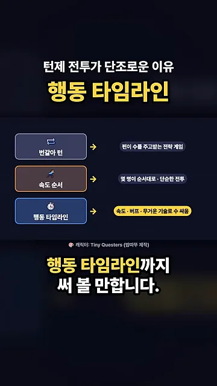
| 규칙 | 차례를 정하는 법 | 속도가 바꾸는 것 | 어울리는 게임 |
|---|---|---|---|
| 번갈아 턴 | 우리 편 전부 → 적 전부 | 없음 | 편끼리 수를 주고받는 전략 게임 |
| 속도 순서 | 판마다 속도대로 줄 세우기 | 순서만 | 캐릭터 몇 명이 순서대로 싸우는 단순한 전투 |
| 행동 타임라인 | 행동 뒤 100 × 무게 ÷ 속도만큼 기다리기 | 순서와 횟수 모두 | 속도·버프·무거운 기술로 수싸움을 만들고 싶은 게임 |